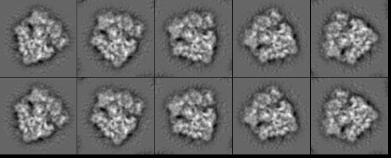

| .OPERATION: | CP TO STK | ; Copy SPIDER stacks into a stack |
| .BARE STACK TEMPLATE (E.G. STK_***@): | sav_rot_rib_sli_stk_** | ; Stack template (input) |
| .FILE NUMBERS OR SELECTION DOC. FILE NAME: | 1-2 | ; Input stack numbers |
| .INITIAL IMAGE NUMBER IN OUTPUT STACK: | 1 | ; Initial output image number |
| .OUTPUT STACK (E.G. NEWSTK@): | cp_to_stk | ; Stack (output) |
| FIRST INPUT IMAGE STACK |
|---|
|
| sav_rot_rib_sli_stk_01 |
| SECOND INPUT IMAGE STACK |
|---|
|
| sav_rot_rib_sli_stk_02 |
| OUTPUT STACK |
|---|
|  |
| cp_to_stk |